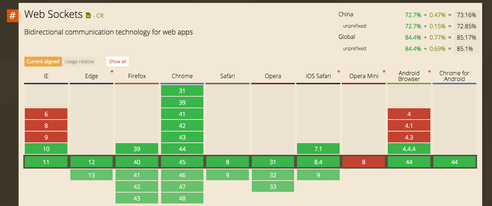
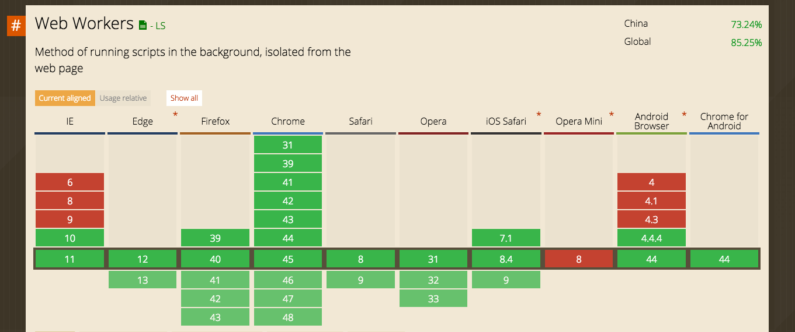

Created by ChaiChunyan / @chaichunyan

WebSocket 是 HTML5 一种新的协议。
它实现了浏览器与服务器全双工通信，能更好的节省服务器资源和带宽并达到实时通讯，它建立在 TCP 之上，同 HTTP 一样通过 TCP 来传输数据，
清单 1.WebSocket 客户端连接报文
GET /webfin/websocket/ HTTP/1.1
Host: localhost
Upgrade: websocket
Connection: Upgrade
Sec-WebSocket-Key: xqBt3ImNzJbYqRINxEFlkg==
Origin: http://localhost:8080
Sec-WebSocket-Version: 13
清单 2.WebSocket 服务端响应报文
HTTP/1.1 101 Switching Protocols
Upgrade: websocket
Connection: Upgrade
Sec-WebSocket-Accept: K7DJLdLooIwIG/MOpvWFB3y3FE8=

Web Workers 出现之前，JavaScript 是现代 web 应用程序的核心。JavaScript 和 DOM 本质上都是单线程的：在任何时间都只能执行一个 JavaScript 方法。即使您的计算机有 4 个内核，在进行长期计算时，也只有一个内核比较繁忙。例如，您在计算到达月球的最佳轨道时，您的浏览器不能渲染一个显示轨迹的动画，以及 — 同时 — 对用户事件作出响应（比如鼠标单击或键盘输入）。
Web Workers 打破了传统 JavaScript 的单线程模式，引入了多线程编程模式。一个 worker 是一个独立的线程。有多个任务需要处理的 web 应用程序不再需要逐个处理任务。反之，应用程序可以将任务分配给不同的 workers。